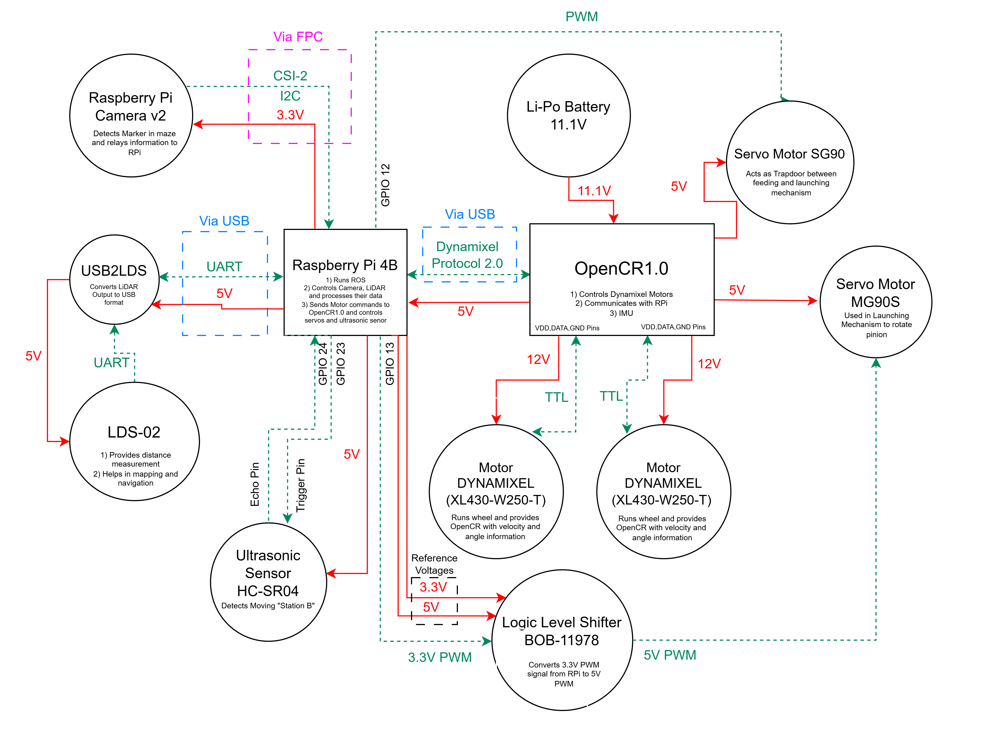
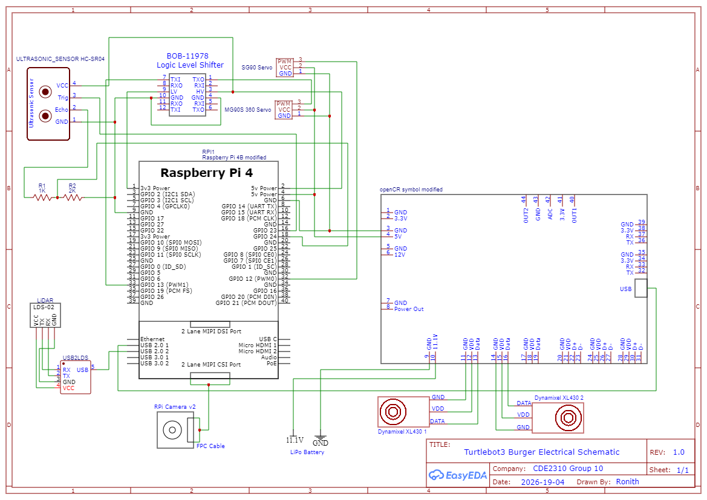
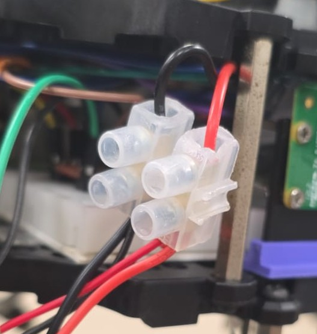

🔗 Navigation
- Home
- Requirements Specification
- Concept of Operations
- High Level Design
- Software Subsystem: Navigation and FSM
- Software Subsystem: ArUco Marker Detection
- Mechanical Subsystem
- Electrical Subsystem
- Interface Control Document
- Software and Firmware Development
- Testing Documentation
- User Manual
- Areas for Improvement
- Appendix
Electrical Subsystem
1. Problem Description
- Integrate SG90 and MG90S servo motors for the launching mechanism into the Turtlebot3 Burger’s existing electrical system.
- Integrate HC-SR04 ultrasonic sensor (added later) to detect the moving receptacle.
- Ensure all additions operate within component ratings without disrupting the base Turtlebot3 setup.
2. Design Requirements
- System must sustain at least 25 minutes of continuous operation per charge.
- All components must operate within rated voltage and current limits.
- Current draw must remain within the battery’s maximum safe discharge current (C-rate limit).
- No unintended actuation of servos or drive motors on startup.
3. Power Budget
Battery
-
Voltage: 11.1V Capacity: 1.8 Ah C-Rate: 5C - Max safe discharge current: $1.8 \times 5 = 9A$
- Total usable energy (80% efficiency):
$11.1 \times 1.8 \times 0.8 = 15.984 \text{ Wh} = 57,542.4 \text{ J}$
Worst Case Power Budget Table
| Component | Voltage (V) | Current (A) | Max Power (W) |
|---|---|---|---|
| SG90 Servo Motor | 5 | 0.36 (stall) | 1.8 (stall) |
| MG90S Servo Motor | 5 | 0.8 (stall) | 4 (stall) |
| HC-SR04 Ultrasonic | 5 | 0.015 (operational) | 0.075 (operational) |
| BOB-11978 Level Shifter | 3.3 | ~0 | ~0 |
| Turtlebot (Movement) | 11.1 | 0.94 (surge) | 10.439 (surge) |
| RPi Camera v2 | 3.3 | 0.35 (surge) | 1.15 (surge) |
Mission Duration Feasibility
- Required mission duration: 25 minutes
- Worst-case runtime: ~54.9 minutes → ~2 full missions possible
- Battery is sufficient even when all components draw maximum power simultaneously.
4. Electrical Subsystem Connections
The electrical subsystem integrates sensor feedback, PWM servo and ultrasonic sensor control, and power distribution for the launcher mechanism and TurtleBot3 operations as shown below:

High Level Electrical System Design

Electrical Schematic Diagram
Power Wiring
- 11.1V Li-Po → OpenCR1.0 and Turtlebot base.
- OpenCR 5V/4A pin → terminal block → RPi 4B, SG90, MG90S.

Terminal Block
- RPi 5V power pin → HC-SR04.
- RPi 3.3V rail → BOB-11978 (LV reference); OpenCR 5V → BOB-11978 (HV reference).
Signal Wiring
- RPi Camera v2 → RPi via CSI-2 ribbon cable.
- LDS-02 → USB2LDS via UART → RPi via USB.
- RPi → OpenCR via USB (Dynamixel Protocol 2.0).
- OpenCR → Dynamixel XL430 motors via TTL at 12V (3-pin JST).
- RPi GPIO 12 → SG90 (3.3V PWM direct).
- RPi GPIO 13 → BOB-11978 → MG90S (3.3V → 5V PWM).
- RPi GPIO 23 → HC-SR04 Trigger; GPIO 24 ← HC-SR04 Echo via 1kΩ–2kΩ divider.
Signal Level Conversion
- MG90S: 3.3V PWM (GPIO 13) → BOB-11978 → 5V PWM.
- HC-SR04 Echo: 5V → 1kΩ–2kΩ voltage divider → ~3.3V at GPIO 24.
- SG90: 3.3V PWM direct — no conversion needed.
5. Design Assumptions
Voltage
- All voltages taken as constant nominal values; voltage sag not modelled.
- Battery held at 11.1V throughout for all calculations.
- Turtlebot subsystem (Dynamixel motors, OpenCR1.0, RPi 4B, LDS-02, USB2LDS) treated as a single 11.1V unit based on experimentally measured 0.94A surge current — these components are not listed individually in the power budget.
Current
- All components assumed to draw max/surge current simultaneously and continuously — true worst case, no duty cycling.
- SG90 and MG90S assumed to stall continuously; stall current from datasheets.
- HC-SR04 uses operational current (15mA); no significant inrush.
- RPi Camera v2 surge current (350mA) is a conservative estimate above the observed 250mA from Raspberry Pi forums.
- BOB-11978 draws negligible current; treated as zero.
- OpenCR 5V/4A rail analysis confirms sufficient headroom for all connected loads.
6. Other Strategies Considered
- Powering servos from RPi GPIO pins: immediately ruled out — GPIO limited to 16mA per pin, far below servo requirements.
- Powering servos from RPi dedicated 5V power pins: a viable option that was overlooked; could be explored in future iterations for simpler wiring.
7. Iterative Design Changes
7.1 Addition of BOB-11978 Logic Level Shifter
- Initially: MG90S controlled via 3.3V PWM directly from RPi GPIO.
- Issue: MG90S did not respond at all to 3.3V PWM during testing.
- Fix: BOB-11978 added to step up GPIO 13 PWM from 3.3V → 5V.
- Result: MG90S operated correctly. SG90 continued to work on 3.3V and required no level shifting.
7.2 Addition of HC-SR04 Ultrasonic Sensor
- Not part of the initial design — added in a later iteration.
- Trigger: GPIO 23; Echo: GPIO 24 via 1kΩ–2kΩ voltage divider.
- Power: RPi 5V power pin.
- Full testing details in the testing documentation.
8. Sensor and Actuator Integration
8.1 Camera
- The RPi Camera v2 connects to the Raspberry Pi 4B via a CSI-2 ribbon cable, which carries both power and data. No separate power rail is required.
8.2 SG90 — Gate Servo
| Parameter | Value / Notes |
|---|---|
| Control Pin | GPIO 12 (BCM) |
| Interface | 50Hz PWM via pigpio |
| Pulse Width | 500µs = open | 1500µs = closed |
| Power | 5V from OpenCR via terminal block |
| Signal | 3.3V PWM direct (no level shifting) |
8.3 MG90S — Pinion Servo
| Parameter | Value / Notes |
|---|---|
| Control Pin | GPIO 13 (BCM) |
| Interface | 50Hz PWM via pigpio |
| Pulse Width | 1000–1300µs = forward | 1500µs = stop | 1000µs = reverse |
| Power | 5V from OpenCR via terminal block |
| Signal | 3.3V PWM → BOB-11978 → 5V PWM |
- Both servos initialise to stop/closed pulse width on startup before any commands are issued.
8.4 HC-SR04 Ultrasonic Sensor
| Parameter | Value / Notes |
|---|---|
| Trigger Pin | GPIO 23 (BCM) — output |
| Echo Pin | GPIO 24 (BCM) — via 1kΩ–2kΩ voltage divider |
| Power | 5V from RPi 5V power pin |
| Function | Detects moving receptacle (Station B) |
8.5 Dynamixel Motors (XL430-W250-T)
| Parameter | Value / Notes |
|---|---|
| Motors | 2× XL430-W250-T (left and right wheel) |
| Protocol | TTL half-duplex — Dynamixel Protocol 2.0 |
| Connector | 3-pin JST |
| Controller | OpenCR1.0 |
| Power | 12V via VDD, DATA, GND pins on OpenCR |
| Control path | RPi → OpenCR via USB → motors via TTL |
9. Final Design and Validation
9.1 Runtime
- Robot completed the 25-minute mission without OpenCR low-voltage alarm triggering (threshold: 11V).
- Actual current draw not measured, but alarm absence confirms battery stayed above 11V throughout.
- Consistent with worst-case predicted runtime of ~54.9 minutes.
9.2 Voltage Stability
- No brownouts, unexpected reboots, or servo jitter observed during operation.
- All rails (OpenCR 5V, RPi 3.3V, 11.1V battery) operated within rated limits.
9.3 Startup Actuation
- Confirmed: SG90 and MG90S remained stationary on boot until explicitly commanded.
- Confirmed: Turtlebot drive motors produced no motion until all ROS data streams were available and a navigation command was issued.